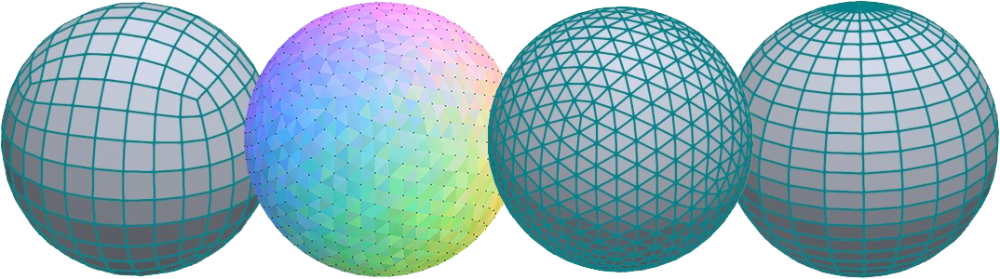

Sphere generation research study
From September 28, 2021, to January 28, 2022, I undertook a captivating graduation research project centered on sphere generation algorithms. The primary objective was to dissect and analyze the various pros and cons of four distinct algorithms: the UV Sphere, Quad Sphere, IcoSphere, and Fibonacci Sphere. This investigation delved into critical aspects such as vertex distribution and density, data storage, subdivision control, UV space utilization, and triangular uniformity. To facilitate this exploration, I developed an interactive sphere generation project in Unity. Within this project, I applied textures, noise maps, and fine-tuned parameters to generate planet-like objects, with a focus on replicating Earth and Earth-like planets.
Initial Project Summary:
This project set out to scrutinize diverse sphere generation methods, evaluating their suitability for the creation of procedural planets. Four main algorithms were carefully considered, with a preliminary assessment of their strengths and weaknesses. My selection process identified the two most promising candidates for the task: generating procedural planets. As we progressed, I explored multiple implementation approaches for these algorithms, meticulously weighing the pros and cons of each method. My aim was to comprehensively assess each implementation and determine which algorithms best suited the creation of procedural planets. Ultimately, the overarching question we sought to answer was: "Which sphere generation algorithm stands out as the ideal choice for procedural planet generation?"